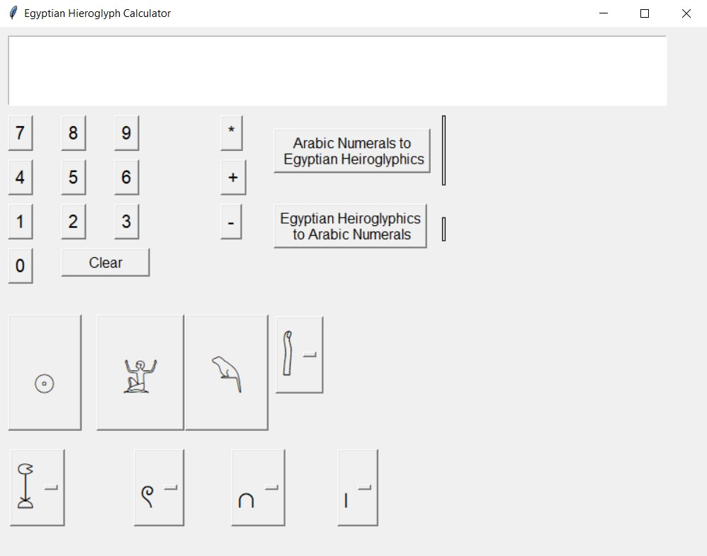
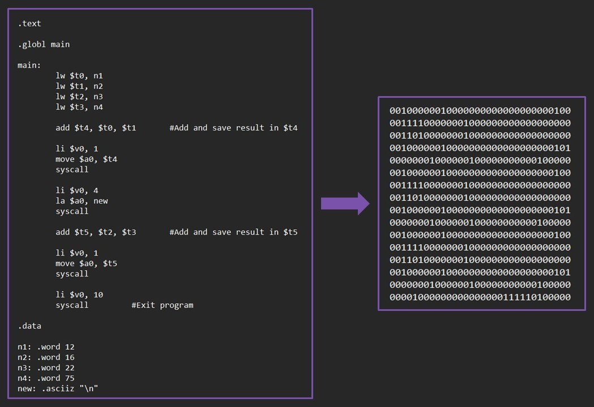

Highlighted Projects
Starting as early as middle school, I have been privileged to collect several projects that were started or completed for school assignments or other personal endeavors. This page is a dedicated space to showcase the projects I am the most proud of.
Portfolio Project: This portfolio website is an ongoing, consistently updated project. You can find more information about the project and its development by visiting this GitHub repository.
College
Linux Kernel Modules
Spring, 2024Password Logger
You can access this module by visiting this repository.
- This loadable kernel module tracks the last 15 typed characters and saves them if they meet common password rules (at least three of the following: lowercase letters, uppercase letters, symbols, or numbers).
- The module tracks the last 100 possible passwords.
Mouse Automover
You can access this module by visiting this repository.
- This module allows the keyboard to control the mouse.
- The arrow keys control mouse movement, and the scroll lock controls the left click.
The Musician’s Helper Application
Fall, 2023Five computer science students collaborated over one semester to develop this application for CS360: Software Engineering. This project utilizes the Ionic React application framework; you can find it in this GitHub repository.
Personal Contributions
- Light and Dark Mode Styling: Developed light and dark mode themes using CSS media queries and JavaScript, ensuring seamless theme transitions during runtime.
- Slider UI Implementation: Implemented the slider and BPM buttons on the metronome page to collect user input. All changes to the tempo are reflected on the slider dial, to provide consistency across the user experience.

Egyptian Hieroglyph Calculator
Spring, 2023This program was created as part of a final project for a math history class. You can access more information about the program by visiting this GitHub repository.
Features
- Convert standard Arabic numerals to Egyptian hieroglyphics and vice versa.
- Perform basic integer arithmetic up to one billion (excluding negatives)

Assembly to Binary Code Translator
Fall, 2021This python program takes an input file written in MIPS assembly and generates an output file containing the corresponding instructions written in 32-bit MIPS machine language. More information about this program can be found in this GitHub repository.


Math-o'-lantern
October, 2021This pumpkin was designed and carved for a campus-wide pumpkin carving contest at Lewis-Clark State College in 2021. I created it for the Math and Science Tutoring Center (MSTC) while working there as a tutor.
Details
The face of this spooky jack-o-lantern is comprised of symbols and Greek letters commonly used in mathematics.
- Each eyebrow is an integral symbol (∫)
- An omega symbol (Ω) is used for each of the eyes
- The nose is a mu symbol (μ)
- Three sigma symbols (∑) are combined to create the mouth.
Middle School
The Blackfish Effect: Aftermath
After a semester-long study on the captivity of orcas, students began creating original pieces of art that reflected the semester’s themes. This two-and-a-half-minute video was my final project. Finally, a local art gallery hosted an event where each student’s art was displayed.
One of the attendees that night was author Rachel Clark, who had been in contact with the trainers interviewed for the film Blackfish. After watching my video, she requested a shareable link to forward to those trainers. I was lucky (and a trainer was kind enough) to reach out to me with an email, thanking me for the art I created.